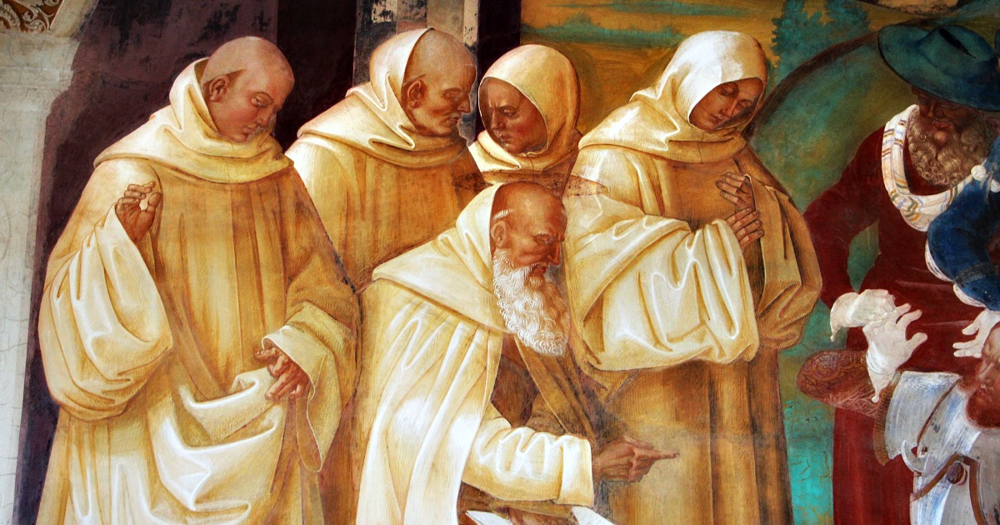

Il monachesimo è uno stile di vita che fonda le sue origini nei primi secoli successivi alla morte di Cristo. Già allora i monaci erano suddivisi in tre grandi categorie: gli eremiti, gli stiliti e i cenobiti.
Gli eremiti sono un gruppo originatosi in Oriente intorno al III sec. d.C. Il loro stile di vita è testimoniato dalla parola stessa "eremita" che deriva dalla parola greca "eremos" che significa deserto. Gli eremiti, vivevano in solitudine e in luoghi dalle condizioni spesso estreme, sottolineando così la loro volontà di rinunciare nel modo più totale alla vita mondana. Il fondatore di questa tipologia di monachesimo sarebbe Antonio, nato intorno al 270 d.C. che visse gli ultimi settant'anni della sua vita nel deserto in completa solitudine.
Per quanto riguarda gli stiliti invece, essi furono in realtà degli eremiti che invece di isolarsi nel deserto o in altri luoghi inospitali, si inerpicavano sulla cima di alte colonne (in greco "styloi") e vivevano di elemosina. La loro però non era solo un'esperienza di privazione, ma anche una pubblica dimostrazione di fede, dato che dall'alto della sua colonna era visibile da tutti. L'iniziatore di questa categoria di monaci è Simeone Stilita il Vecchio.
Mentre in Oriente il monachesimo si diffuse sotto forma eremitica, in Europa esso si sviluppò sotto forma cenobitica. Questo tipo di monachesimo si differenziava da quello di tipo eremita perchè i cenobiti si riunivano in abbazie e praticavano la vita in comune seppur con regole severe. In queste abbazie c'erano attività volte alla preghiera e alla meditazione, ma anche al lavoro manuale e intellettuale. Inizialmente ogni abbazia aveva le proprie regole. Questo cambiò quando San Benedetto fondò l'abbazia di Montecassino. Egli infatti istituì la regola benedettina, che poi venne applicata in tutta Europa con poche eccezioni. Le attività erano regolate dal mutare delle stagioni (era molto importante sfruttare le ore di luce), e consistevano essenzialmente nella preghiera, nella meditazione delle Sacre scritture e nel lavoro manuale. Il tutto può essere sintetizzato dalla formula Ora et labora (prega e lavora). Veniva imposta anche la povertà, addirittura i monaci non potevano possedere nulla di proprio, tanto che nella Regola viene detto che la proprietà privata non è altro che un vizio.
La diffusione del monachesimo, in particolare del modello benedettino, si deve a papa Gregorio I (590-604). Questi, affascinato dalla figura di Benedetto, promosse la Regola in tutti i monasteri di nuova fondazione, rendendola in questo modo ben presto il modello standard di monachesimo in Europa. Un luogo in cui il fenomeno monacale ebbe grande rilievo fu l'Irlanda. Qui, la cristianità fu portata attraverso missionari provenienti dalla Britannia, come Patrizio, considerato il fondatore della chiesa Irlandese. In Irlanda la tradizione monastica cominciò a radicarsi già nel V-VI secolo, e ben presto divenne il fulcro della cristianità sotto forma monastica.
I monasteri, avendo visto la luce in un periodo storico che ormai andava delineandosi nel Medioevo, erano gli unici centri di sapere presenti in Europa. Questi monasteri erano spesso sedi di biblioteche e quasi sempre avevano un luogo, lo scriptoria, dedicato alla ricopiatura dei testi. L'insegnamento era diventata quindi nel Medioevo una pratica che poteva essere attuata solo da questo tipo di ambienti, quindi. Esso, che includeva l'insegnamento di rudimenti del latino e la teologia, era inizialmente trasmesso ai soli novizi, cioè coloro che chiedevano l'ammissione all'interno del cenobio, mentre successivamente anche ai rampolli delle famiglie facenti parte dell'élite.